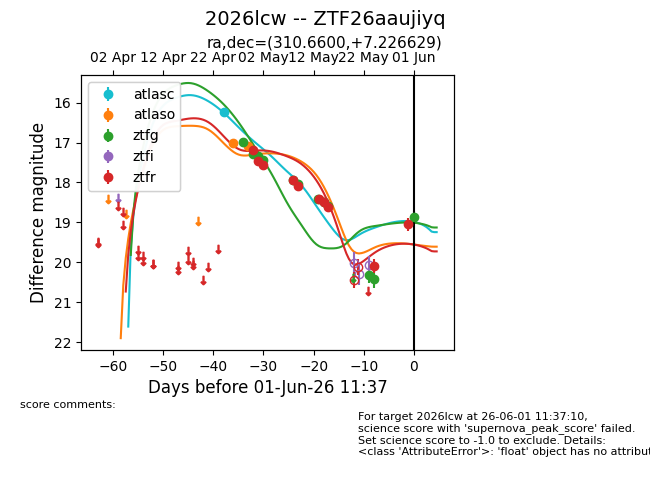
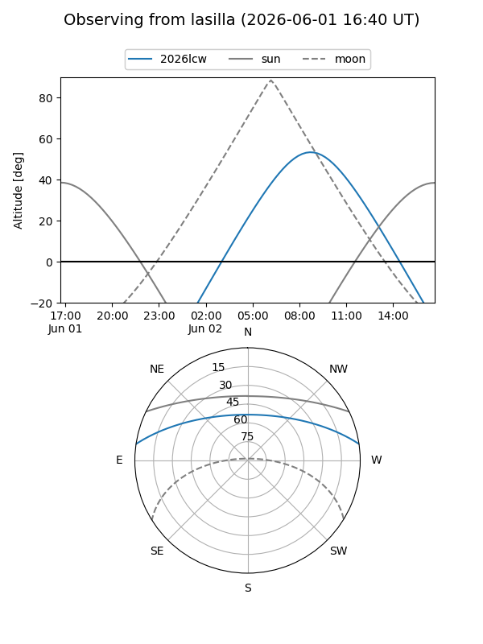
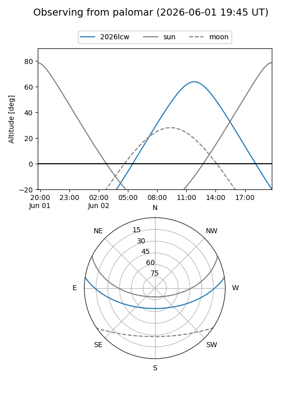
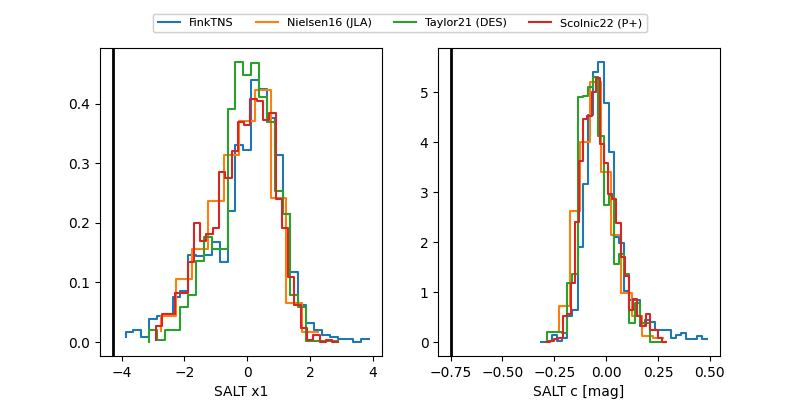

2026lcw
Target 2026lcw at 2026-06-01 11:38
Aliases and brokers:
lsst-FINK: link
lsst-Lasair: link
lsst-ALeRCE: link
ztf-FINK: link
ztf-Lasair: link
ztf-ALeRCE: link
TNS: link
YSE: link
alt names
ZTF26aaujiyq (ztf,fink_ztf)
2026lcw (tns,yse)
Coordinates:
equatorial (ra, dec) = 310.6600,+7.22663
equatorial (HMS+DMS) = 20:42:38.40,+07:13:35.86
galactic (l, b) = (53.1353,-20.75842)
Flags:
TNS confirmed: nan
Photometry:
last atlasc=16.23, atlaso=17.08, ztfg=18.86, ztfr=19.05
1 atlasc, 2 atlaso, 12 ztfg, 10 ztfr detections
Lightcurve

Visibility


Additional plots
